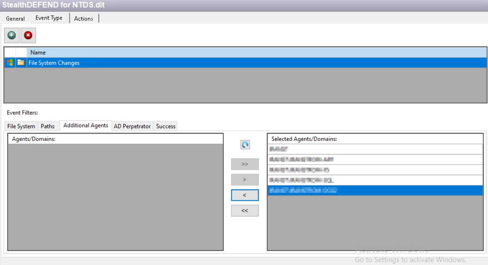

Symptom
When attempting to access the NTDS.dit file on a domain controller, the expected threat event does not trigger in Netwrix Threat Manager.
Cause
By default, the NTDS.dit event in Netwrix Threat Prevention only tracks one domain controller. If the file is accessed from a system other than the one being tracked by default, the event is not captured or forwarded to Threat Manager.
Resolution
To resolve the issue, add all domains and systems to be tracked:
- Navigate to the policy settings in Threat Prevention.
- Select Event Type > Additional Agents > Add All Agents and Domains.
